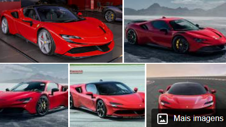

Modelo: Ferrari SF90
Portas: 2
Aceleração de 0 a 100 km/h: 2,5 segundos
Configuração dos cilindros: Motor em V
Dimensões: 4.710 mm C x 1.972 mm L x 1.186 mm
Tração: Tração nas quatro rodas
Motor: 4,0 l V8
Estilos de carroceria: Conversível, Coupê
uol.com.br
https://www.uol.com.br › carros › redacao › 2021/02/27
Única Ferrari SF90 Stradale do Brasil custa R$ 6,9 ... - UOL
27 de fev. de 2021 — A SF90 Stradale tem 4,17 metros de comprimento, 1,97 de largura, 1,18 m de altura. O entre-eixos é de 2,65 m - o mesmo que do Toyota Corolla ...
webmotors.com.br
https://www.webmotors.com.br › Carros › Ferrari
Ferrari SF90 - Webmotors
Procurando por Ferrari Sf90 Novos e Usados? Na Webmotors você encontra mais de 19 anúncios de carros com as melhores ofertas do mercado. Acesse Agora!